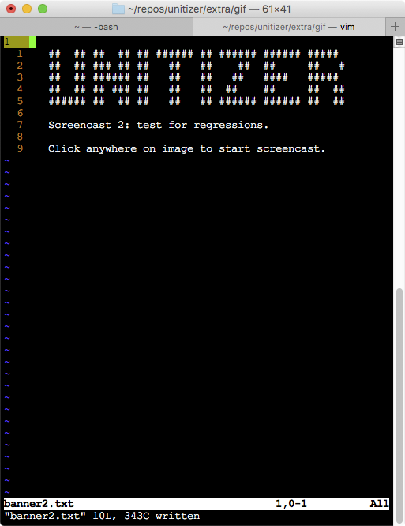

In this screencast we take usage examples for our matrix rotation function and turn them into unit tests with unitizer.
We will optimize our rotation function, and use the tests we just created to ensure we don't introduce regressions. First, we'll check that all tests are currently passing.
